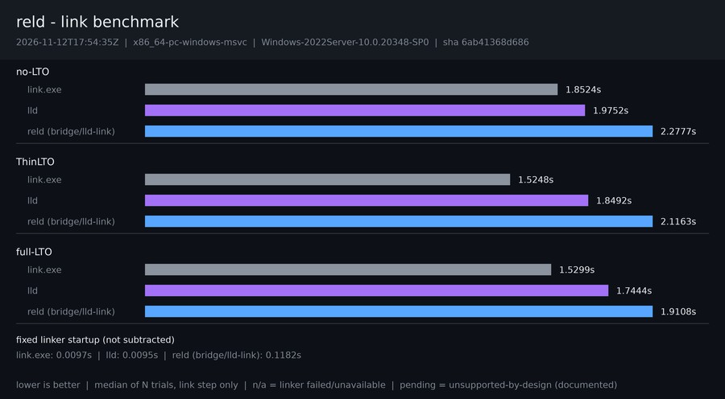

2026-11-12T17:54:35Z · x86_64-pc-windows-msvc · Windows-2022Server-10.0.20348-SP0

| Configuration | link.exe | lld | reld (bridge/lld-link) |
|---|---|---|---|
| no-LTO | 1.8524s | 1.9752s | 2.2777s |
| ThinLTO | 1.5248s | 1.8492s | 2.1163s |
| full-LTO | 1.5299s | 1.7444s | 1.9108s |
Reported raw and never subtracted from final-link medians.
| Series | Seconds |
|---|---|
| link.exe | 0.0097s |
| lld | 0.0095s |
| reld (bridge/lld-link) | 0.1182s |